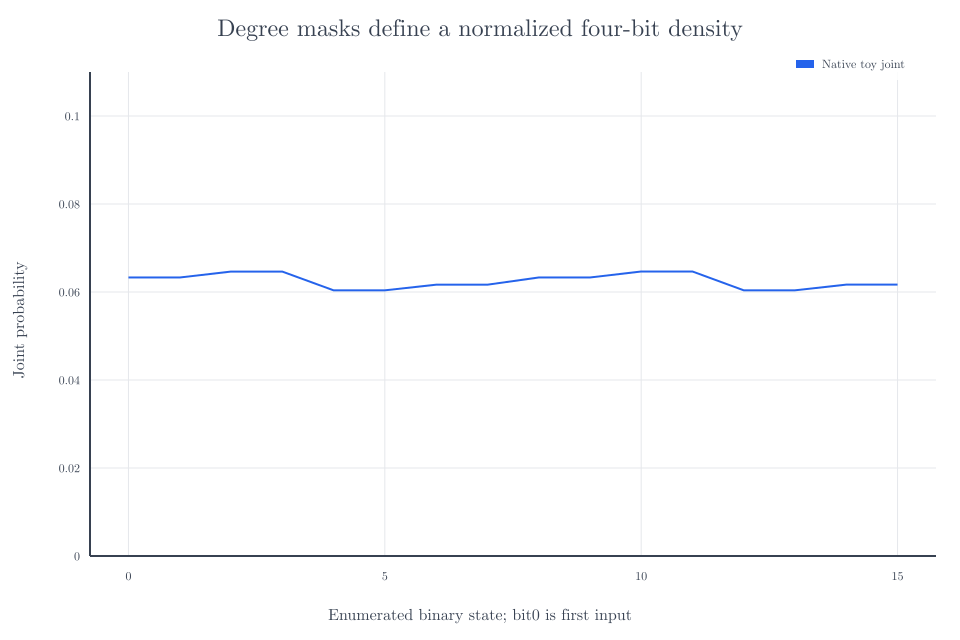
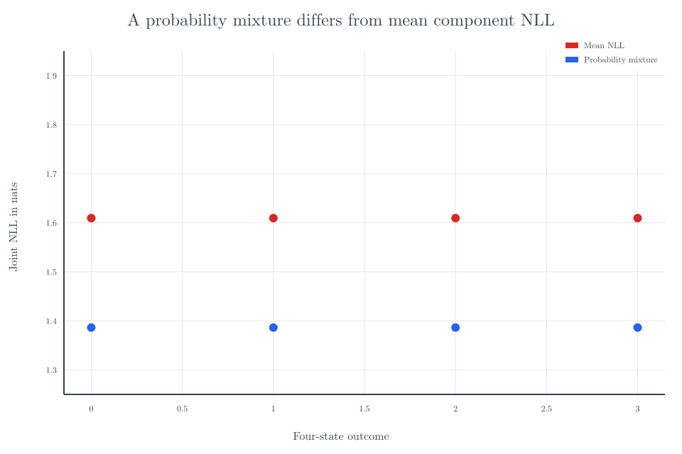
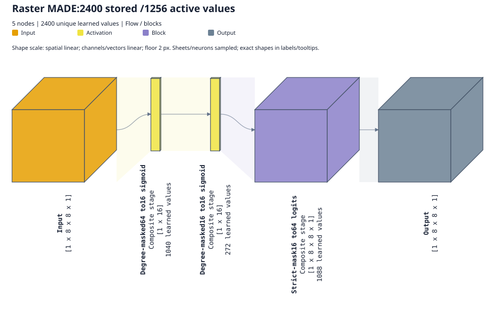
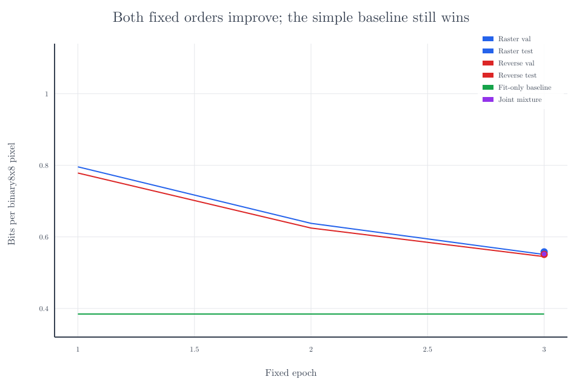
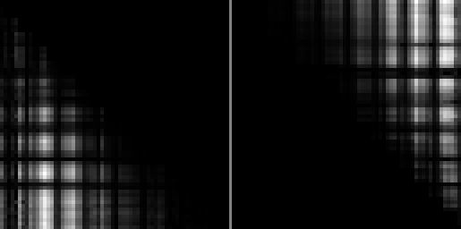
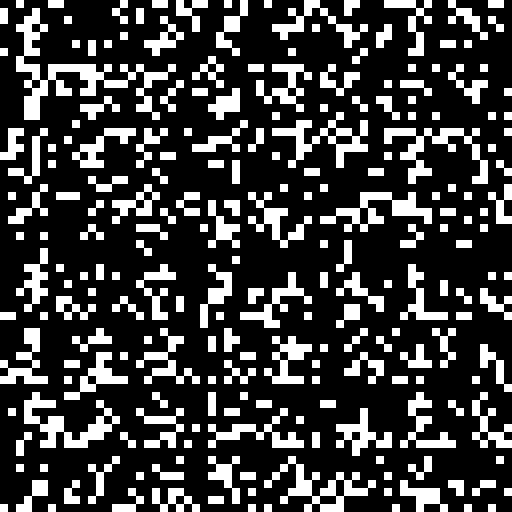
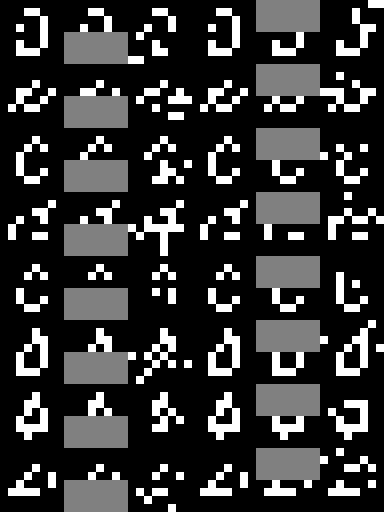
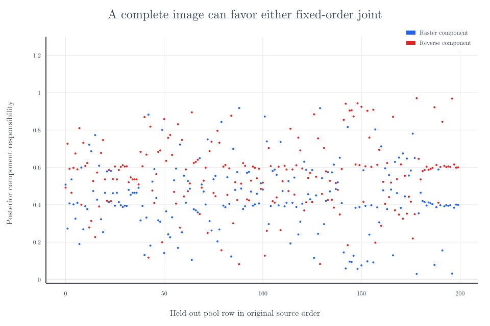

MADE: Two Degree-Masked Joint Densities
Abstract
Degree masks turn a dense network into a normalized autoregressive density: every output can depend only on earlier inputs in a chosen order. This native C++ experiment fits two independent binary8x8 MNIST models, raster and reverse, with two16-unit sigmoid layers each. Worked degree and mixture examples precede the real data. The complete program exposes all192 Adam writes and both raster samplers, including order-specific observed prefixes. The fixed-final losses are .55804 and.55103 bits per binary pixel; their equal-probability joint mixture scores.55218. All remain worse than the fit-only Bernoulli baseline's.38445. Exact source parity and causal checks establish numerical fidelity, not state-of-the-art density estimation or realistic digit generation.
Use degree constraints to exclude own and future inputs
[Germain, Gregor, Murray and Larochelle, MADE: Masked Autoencoder for Distribution Estimation (2015)](https://arxiv.org/abs/1502.03509) constrains dense network paths so outputs define conditional probabilities. Here the word masked refers to *structural weight masks*, not random input corruption or a denoising reconstruction objective. The target is a normalized Bernoulli joint density over64 binary pixels.
Give each input/output a degree d. Input-to-hidden and hidden-to-hidden masks permit incoming degree<=outgoing degree. The last mask is strict: hidden degree <output degree. Along every surviving path,
Thus logit j excludes its own pixel and every later pixel in that order. Two sigmoid hidden layers of width16 end in64 Bernoulli logits. There are no raw input skips, labels, normalization, dropout, pooling or batch-coupled statistics. The first prediction has only its learned bias. Some past inputs can also be unreachable with the chosen small hidden-degree inventory; strict causality does not promise every past dependency.
#include <dm/dm.hpp>
int main(){
std::filesystem::create_directories("build");
dm::graphics::Diagram d(54,1600);dm::graphics::DiagramNodeStyle s;
s.width=10;s.height=5;s.font_size=34;
d.node("x",{-21,0},"64 binary inputs\nDegree d",s)
.node("h1",{-7,0},"16 sigmoid units\nh1 >= input degree",s)
.node("h2",{7,0},"16 sigmoid units\nh2 >= h1",s)
.node("out",{21,0},"64 Bernoulli logits\nOutput degree > h2",s)
.edge("x","h1").edge("h1","h2").edge("h2","out")
.save_svg("build/md_method.svg");
}
Hand-check a four-bit density before loading images
Use input degrees(1,2,3,4), hidden1(1,2,3) and hidden2(2,3,1). Compose the three comparison masks with<,<,<. A zero product at(i,j) means no structural path from input i to output j; every current/future path must be zero. The following complete native program builds this tiny network and enumerates all16 binary states. It fits nothing. The sum of exp(−joint NLL) is one because every output is a proper Bernoulli conditional on preceding coordinates.
#include <dm/dm.hpp>
int main(){
namespace n=dm::nn;namespace m=n::models;auto t=n::DType::Float64;
auto d=n::from_vector(std::vector<std::int64_t>{1,2,3,4},{4});
auto h1d=n::from_vector(std::vector<std::int64_t>{1,2,3},{3});
auto h2d=n::from_vector(std::vector<std::int64_t>{2,3,1},{3});
auto a=m::AutoregressiveDegreeMask(d,h1d,false,t),b=m::AutoregressiveDegreeMask(h1d,h2d,false,t),c=m::AutoregressiveDegreeMask(h2d,d,true,t);
auto paths=n::matmul(n::matmul(a,b),c).to_vector<double>();
for(int i=0;i<4;++i)for(int j=0;j<=i;++j)if(paths[i*4+j]!=0)throw std::runtime_error("Own/future path");
std::vector<double> bits;for(int state=0;state<16;++state)for(int j=0;j<4;++j)bits.push_back((state>>j)&1);
auto x=n::from_vector(bits,{16,4});n::ParameterStore p(8803,t);
auto h1=n::sigmoid(m::MaskedDensityDense(p,"input",x,a));
auto h2=n::sigmoid(m::MaskedDensityDense(p,"hidden",h1,b));
auto logits=m::MaskedDensityDense(p,"output",h2,c);
auto nll=m::BernoulliPixels(n::reshape(logits,{16,1,4,1}),n::reshape(x,{16,1,4,1})).per_image_nll;
auto probability=n::exp(-nll);double total=n::sum(probability).item();
if(std::abs(total-1)>1e-13)throw std::runtime_error("Normalized joint");
auto plot=dm::graphics::RPlot::create();
plot.lines(n::arange(0,16).to_vector<double>(),probability.to_vector<double>(),"Native toy joint",{37,99,235})
.y_limits(0,.11).x_label("Enumerated binary state; bit0 is first input")
.y_label("Joint probability").title("Degree masks define a normalized four-bit density")
.save_svg("build/md_degree_toy.svg");
std::print("| Four-bit worked check | Value |\n|---|---:|\n| Own/future structural paths |0|\n| Enumerated binary states |16|\n| Sum of joint probabilities |{:.15f}|\n",total);
}| Four-bit worked check | Value |
|---|---|
| Own/future structural paths | 0 |
| Enumerated binary states | 16 |
| Sum of joint probabilities | 1.000000000000000 |

Derive the probability mixture rather than average the losses
After fitting two independent normalized joints p_R and p_V, the source mixes their *probabilities*, p_mix(x)=(p_R(x)+p_V(x))/2. If l_R and l_V are per-image joint NLLs, the stable calculation is
It is not(l_R+l_V)/2. Jensen gives l_mix<=mean(l_R,l_V) for each image; it does not guarantee a lower test-pool mean than the better individual model. Its component derivative is the posterior responsibility p_k(x)/(p_R(x)+p_V(x)). The stabilizing maximum can be stopped while keeping the correct first and higher derivatives of logsumexp.
For two normalized four-state tables A=(.4,.1,.1,.4), B=(.1,.4,.4,.1), the mixture is uniform(.25,.25,.25,.25), NLL=log4. Averaging the two component NLLs instead gives log5 at each state. The native helper accepts joint NLL sums, not per-pixel means; otherwise it would mix a different quantity.
#include <dm/dm.hpp>
int main(){
namespace n=dm::nn;auto t=n::DType::Float64;
auto p=n::tensor({.4,.1,.1,.4,.1,.4,.4,.1},{4,2},t);
auto nll=(-n::log(p)).requires_grad_();auto out=n::models::EqualDensityMixture(nll);
auto average=n::mean(nll,{1});
auto derivative=n::grad(n::sum(out.per_image_nll),{nll})[0];
if(n::max(n::abs(derivative-out.responsibilities)).item()>1e-14)throw std::runtime_error("Responsibilities");
if(std::abs(n::sum(n::exp(-out.per_image_nll)).item()-1)>1e-14)throw std::runtime_error("Mixture normalization");
auto plot=dm::graphics::RPlot::create();
plot.points({0,1,2,3},average.to_vector<double>(),"Mean NLL",{220,38,38},6)
.points({0,1,2,3},out.per_image_nll.to_vector<double>(),"Probability mixture",{37,99,235},6)
.y_limits(1.25,1.95).x_label("Four-state outcome").y_label("Joint NLL in nats")
.title("A probability mixture differs from mean component NLL").save_svg("build/md_mixture_toy.svg");
std::print("Mixture mean={:.8f}; mean component NLL={:.8f}; first responsibility pair={}.\n",out.mean_nll.item(),n::mean(average).item(),n::take_rows(out.responsibilities,{0}).values_str());
}Mixture mean=1.38629436; mean component NLL=1.60943791; first responsibility pair=[[0.8, 0.2]].

Trace the actual64-pixel network and its fixed degree inventory
Raster degrees are1..64; reverse degrees64..1. Hidden1[i]=1+floor(i*62/15) and hidden2[i]=hidden1[(5*i)mod16],i=0..15. Both orderings have the same raw initial weight draws with seed8803, but different structural masks and independent optimizer states. Three affine layers64→16→16→64 have2304 kernel values and96 bias values:2400 stored in6 leaves,1144 forbidden and1256 active.
The source trains one store for each fixed order. It does not train a shared-weight order-agnostic model. Changing a native per-call order flag is possible, but would be a different experiment if used to share learned weights across orders.
#include <dm/dm.hpp>
int main(){
namespace n=dm::nn;n::ParameterStore p(8803);
n::Module model([&](const n::Tensor& x){
auto out=n::models::MadeDensity(p,x,false);
n::model_stage("Degree-masked64 to16 sigmoid",x,out.hidden1);
n::model_stage("Degree-masked16 to16 sigmoid",out.hidden1,out.hidden2);
return n::model_stage("Strict-mask16 to64 logits",out.hidden2,out.logits);
},"Raster MADE:2400 stored /1256 active values");
n::ModelPlotOptions options;options.detail=n::ModelPlotDetail::Blocks;
options.sizing.minimum_extent=2;options.sizing.max_planes=4;
auto fig=model.plot(n::zeros({1,8,8,1}),options);
if(fig.parameter_count()!=2400||p.size()!=6)throw std::runtime_error("Source census");
fig.save_svg("build/md_network.svg");
}
Fit both orders with complete visible updates and samplers
Canonical native MNIST saliency preparation provides1000 balanced fit,200 validation and200 disjoint official-test images, with labels, source IDs and a provenance manifest. BinaryPixels performs Double half-pixel28→8 bilinear arithmetic, casts once to Float32 and thresholds gray>=.5. Labels remain metadata; MADE uses no class conditioning. The source's optional TensorFlow directory has no initial arrays, so its auto default selects native seed8803.
Both models use BatchOrder seed8819, batch size32 and three fixed epochs. There are31 full batches and one8-row batch per epoch,96 Adam(.003) writes per order, 192 total. Adam uses betas(.9,.999),epsilon1e−8 and no weight decay. The fixed final epoch3 is chosen before inspecting held-out loss. Both stores begin with the same raw weights; each gets its own masks, gradients and cold Adam moments. All1144 forbidden coordinates are checked after every write.
The teacher-forced Bernoulli objective is mean(softplus(logit)−target*logit), in nats per *binary8x8 pixel*. The per-image NLL sums64 terms. Dividing nats by log2 gives bits; these are not bits per original28x28 gray pixel. Only per-image sums enter the final joint-density mixture.
The complete sampler draws a full Double[N,64] midpoint-MT bank in row/ordinal order. Raster ordinal j writes raw site j; reverse ordinal j writes63−j. Retained conditionals are indexed by ordinal. Seed8821 supplies final32-sample and three16-sample epoch banks; seed8827 supplies eight prefix completions. A completion preserves the first32 sites in its model's order: top half for raster, bottom half for reverse. It still draws every uniform column and keeps prefix conditionals zero. Future truth and gray display unknowns never enter the sampler. Source records contain per-order samples, not invented mixture samples.
#include <dm/dm.hpp>
namespace n=dm::nn;namespace m=n::models;
using T=n::Tensor;using A=std::map<std::string,T>;namespace fs=std::filesystem;
void Save(const fs::path& file,const A& fields){
n::NamedTensors named;for(const auto& [key,value]:fields)named.emplace_back(key,value);
n::save_npz(file.string(),named);
}
A Weights(const n::ParameterStore& p){
A out;for(const auto& name:p.names())out.emplace(name,p.at(name).detach().clone());return out;
}
bool Equal(const A& a,const A& b){
if(a.size()!=b.size())return false;
for(const auto& [key,value]:a)if(!b.count(key)||!n::equal_bits(value,b.at(key)))return false;
return true;
}
A Partials(const n::ParameterStore& p,const std::vector<T>& g){
A out;for(std::size_t k=0;k<g.size();++k)out.emplace(p.names()[k],g[k].detach());return out;
}
A Evaluate(n::ParameterStore& p,const T& x,bool reverse){
n::NoGradGuard guard;auto o=m::MadeDensity(p,x,reverse);auto l=m::BernoulliPixels(o.logits,x);
return {{"logits",o.logits},{"hidden1",o.hidden1},{"hidden2",o.hidden2},
{"probability",l.probability},{"per_image_nll",l.per_image_nll},{"loss",l.loss}};
}
A Sample(n::ParameterStore& p,int count,std::uint32_t seed,bool reverse,const T& prefix={},int prefix_size=0){
n::NoGradGuard guard;
auto ordinal=n::reshape(n::arange(0,64),{1,64});
auto ranks=reverse?63-ordinal:ordinal;
T canvas=n::zeros({count,64}),conditionals=n::zeros({count,64});
const auto bank=m::BinaryPixelUniforms(count,seed);
if(prefix_size)canvas=n::where(n::less(ranks,prefix_size),n::reshape(prefix,{count,64}),canvas);
for(int j=prefix_size;j<64;++j){
const int site=reverse?63-j:j;
auto logits=m::MadeDensity(p,n::reshape(canvas,{count,8,8,1}),reverse).logits;
auto q=n::slice_axis(n::reshape(n::sigmoid(logits),{count,64}),1,site,site+1);
auto u=n::slice_axis(bank,1,j,j+1);
auto bit=n::cast(n::less(u,n::cast(q,n::DType::Float64)),n::DType::Float32);
auto at_site=n::equal(ordinal,site);
conditionals=n::where(n::equal(ordinal,j),q,conditionals);
canvas=n::where(at_site,bit,canvas);
}
return {{"images",n::reshape(canvas,{count,8,8,1})},{"uniform",bank},{"conditionals",conditionals}};
}
int main(){
const fs::path directory="build/made_density";
for(bool reverse:{false,true}){
const auto root=directory/(reverse?"reverse":"raster");fs::create_directories(root/"phases");
n::set_num_threads(4);
const fs::path data_root=dm::datasets::prepare_example_data("mnist-assets");
const auto pools=m::LoadSaliency(data_root/"saliency");
std::vector<T> binary;A data;
const std::vector<std::string> split{"fit","validation","test"};
for(int k=0;k<3;++k){
auto prep=m::BinaryPixels(pools[k].images);binary.push_back(prep.images);
data[split[k]+"_original"]=pools[k].images;data[split[k]+"_gray"]=prep.gray;
data[split[k]+"_images"]=prep.images;data[split[k]+"_labels"]=pools[k].labels;
data[split[k]+"_source_ids"]=pools[k].source;
}
Save(root/"data.npz",data);
auto inventory=m::MadeMasks(reverse);
Save(root/"mask_inventory.npz",{{"input_degrees",inventory.input_degrees},{"hidden1_degrees",inventory.hidden1_degrees},
{"hidden2_degrees",inventory.hidden2_degrees},{"input_mask",inventory.input_mask},{"hidden_mask",inventory.hidden_mask},{"output_mask",inventory.output_mask}});
A masks{{"input/W",inventory.input_mask},{"hidden/W",inventory.hidden_mask},{"output/W",inventory.output_mask}};
n::ParameterStore p(8803);
{n::NoGradGuard guard;m::MadeDensity(p,n::zeros({1,8,8,1}),reverse);}
const auto initial=Weights(p);Save(root/"initial_arrays.npz",initial);
Save(root/"initial_outputs.npz",Evaluate(p,binary[2],reverse));
n::OptimizerConfig config;config.kind=n::OptimizerKind::Adam;
n::Optimizer optimizer(p,.003,config);
n::BatchOrder order(1000,32,8819);std::vector<std::int64_t> rows;
std::ofstream batches(root/"batches.tsv"),history(root/"history.tsv");history.precision(17);
batches<<"epoch\tstep\trow\tsource_id\n";
history<<"epoch\tvalidation_nll_per_binary_pixel\tvalidation_bits_per_binary_pixel\n";
auto source=pools[0].source.to_vector<std::int32_t>();
std::vector<double> val_bits;T first;int updates=0;
for(int epoch=1;epoch<=3;++epoch){
order.begin_epoch();
for(;;){
rows=order.next();if(rows.empty())break;
const auto x=n::take_rows(binary[0],rows);
if(!updates){first=x;Save(root/"first_batch.npz",{{"images",x}});
Save(root/"first_forward.npz",Evaluate(p,x,reverse));}
auto output=m::MadeDensity(p,x,reverse);auto objective=m::BernoulliPixels(output.logits,x);
auto gradients=n::grad(objective.loss,p.parameters());
const auto phase=root/"phases"/("batch"+std::to_string(updates));
Save(phase.string()+"-gradient.npz",Partials(p,gradients));
if(!updates)Save(root/"initial_gradients.npz",Partials(p,gradients));
optimizer.step(gradients);
const auto after=Weights(p);Save(phase.string()+"-after.npz",after);
Save(phase.string()+"-iterations.npz",{{"iterations",n::from_vector(std::vector<std::int64_t>{optimizer.iterations()},{1})}});
if(!updates)Save(root/"first_after.npz",after);
for(const auto& [key,value]:initial){
if(!masks.count(key))continue;
auto mask=masks.at(key);
auto forbidden=n::equal(mask,0);
if(!n::equal_bits(n::where(forbidden,value,n::zeros_like(value)),
n::where(forbidden,after.at(key),n::zeros_like(value))) ||
n::max(n::abs(n::where(forbidden,Partials(p,gradients).at(key),n::zeros_like(value)))).item()!=0)
throw std::runtime_error("Masked coordinates changed");
}
for(auto row:rows)batches<<epoch<<'\t'<<updates<<'\t'<<row<<'\t'<<source[row]<<'\n';
++updates;
}
const double nll=Evaluate(p,binary[1],reverse).at("loss").item();
history<<epoch<<'\t'<<nll<<'\t'<<nll/std::log(2.)<<'\n';val_bits.push_back(nll/std::log(2.));
Save(root/("epoch"+std::to_string(epoch)+"_arrays.npz"),Weights(p));
Save(root/("epoch"+std::to_string(epoch)+"_samples.npz"),Sample(p,16,8821,reverse));
}
if(updates!=96 || optimizer.iterations()!=96)throw std::runtime_error("96 Adam updates");
p.save((root/"final.npz").string());
Save(root/"final_gradients.npz",Partials(p,n::grad(m::BernoulliPixels(m::MadeDensity(p,first,reverse).logits,first).loss,p.parameters())));
n::ParameterStore restored(8803);
{n::NoGradGuard guard;m::MadeDensity(restored,n::zeros({1,8,8,1}),reverse);}
restored.load((root/"final.npz").string(),true);
if(!Equal(Weights(p),Weights(restored)))throw std::runtime_error("Fresh restore");
const auto before=Weights(restored),out=Evaluate(restored,binary[2],reverse);
Save(root/"model_arrays.npz",before);Save(root/"outputs.npz",out);
auto single=n::take_rows(binary[2],{0});
auto probability=Evaluate(restored,single,reverse).at("probability");
if(n::max(n::abs(probability-n::take_rows(out.at("probability"),{0}))).item()>1e-6)
throw std::runtime_error("Batch independence");
A causal{{"images",single},{"probability",probability}};std::vector<T> jacobian(64);
auto raw=n::reshape(n::arange(0,64),{1,8,8,1});
auto rank=reverse?63-raw:raw;
for(int ordinal=0;ordinal<64;++ordinal){
const int site=reverse?63-ordinal:ordinal;
auto input=single.detach().clone().requires_grad_();
auto logits=n::reshape(m::MadeDensity(restored,input,reverse).logits,{1,64});
auto gradient=n::reshape(n::grad(n::sum(n::slice_axis(logits,1,site,site+1)),{input})[0],{64});
if(n::max(n::abs(n::where(n::greater_equal(n::reshape(rank,{64}),ordinal),gradient,n::zeros_like(gradient)))).item()!=0)
throw std::runtime_error("Current/future derivative");
auto changed=n::where(n::greater_equal(rank,ordinal),1-single,single);
auto cp=Evaluate(restored,changed,reverse).at("probability");
if(!n::equal_bits(n::where(n::less_equal(rank,ordinal),cp,n::zeros_like(cp)),
n::where(n::less_equal(rank,ordinal),probability,n::zeros_like(probability))))
throw std::runtime_error("Future-flip prefix invariant");
if(ordinal%8==0){causal["changed_input"+std::to_string(site)]=changed;
causal["changed_probability"+std::to_string(site)]=cp;}
jacobian[site]=gradient.detach();
}
causal["jacobian"]=n::stack(jacobian);Save(root/"causality.npz",causal);
auto samples=Sample(restored,32,8821,reverse);Save(root/"samples.npz",samples);
if(!Equal(samples,Sample(restored,32,8821,reverse)))throw std::runtime_error("Repeated sample bank/conditionals");
auto truth=n::take_rows(binary[2],{0,1,2,3,4,5,6,7});
auto completion=Sample(restored,8,8827,reverse,truth,32);completion["truth"]=truth;
Save(root/"completions.npz",completion);
if(!n::equal_bits(n::where(n::less(rank,32),truth,n::zeros_like(truth)),
n::where(n::less(rank,32),completion.at("images"),n::zeros_like(truth))))
throw std::runtime_error("Observed prefix preservation");
auto observed=n::where(n::less(rank,32),truth,n::full(truth.shape(),.5));
auto gallery=n::reshape(n::stack({truth,observed,completion.at("images")},1),{24,8,8,1});
Save(root/"completion_gallery.npz",{{"images",gallery}});
n::save_image_grid(n::tile(samples.at("images"),{1,1,1,3}),(root/"samples.png").string(),8,0,1,0,220/255.,8);
n::save_image_grid(n::tile(gallery,{1,1,1,3}),(root/"completions.png").string(),3,0,1,0,220/255.,8);
if(!Equal(before,Weights(restored)))throw std::runtime_error("Inference wrote parameters");
{n::NoGradGuard guard;
auto posterior=(n::sum(n::cast(binary[0],n::DType::Float64),{0})+.5)/1001.;
auto target=n::cast(binary[2],n::DType::Float64);
auto baseline=-n::mean(target*n::log(posterior)+(1-target)*n::log1p(-posterior));
Save(root/"baseline.npz",{{"probability",n::reshape(n::cast(posterior,n::DType::Float32),{64})}});
Save(root/"summary.npz",{{"validation_bits",n::from_vector(val_bits,{3})},
{"test_bits",n::cast(out.at("loss"),n::DType::Float64)/std::log(2.)},
{"baseline_bits",baseline/std::log(2.)}});
std::print("| Fixed protocol | Value |\n|---|---:|\n| Fit / validation / test |1000 /200 /200|\n| Stored / active / masked values |2400 /1256 /1144|\n| Epochs / Adam updates |3 /96|\n| Full causal Jacobian entries checked |4096|\n| Test bits per binary pixel |{:.6f}|\n| Fit-only Bernoulli baseline |{:.6f}|\n",out.at("loss").item()/std::log(2.),baseline.item()/std::log(2.));
}
}
A raster,reverse;
for(auto& [key,value]:n::load_npz((directory/"raster/outputs.npz").string()))raster.emplace(key,value);
for(auto& [key,value]:n::load_npz((directory/"reverse/outputs.npz").string()))reverse.emplace(key,value);
auto mixture=m::EqualDensityMixture(n::stack({raster.at("per_image_nll"),reverse.at("per_image_nll")},1));
Save(directory/"order_ensemble.npz",{{"per_image_nll",mixture.per_image_nll},{"raster_per_image_nll",raster.at("per_image_nll")},{"reverse_per_image_nll",reverse.at("per_image_nll")}});
Save(directory/"mixture_summary.npz",{{"per_image_nll",mixture.per_image_nll},{"mean_nll",mixture.mean_nll},{"responsibilities",mixture.responsibilities}});
std::print("Equal-probability mixture test bits per binary pixel: {:.6f}.\n",mixture.mean_nll.item()/64/std::log(2.));
}| Fixed protocol | Value |
|---|---|
| Fit / validation / test | 1000 /200 /200 |
| Stored / active / masked values | 2400 /1256 /1144 |
| Epochs / Adam updates | 3 /96 |
| Full causal Jacobian entries checked | 4096 |
| Test bits per binary pixel | 0.558043 |
| Fit-only Bernoulli baseline | 0.384447 |
| Fixed protocol | Value |
| --- | ---: |
| Fit / validation / test | 1000 /200 /200 |
| Stored / active / masked values | 2400 /1256 /1144 |
| Epochs / Adam updates | 3 /96 |
| Full causal Jacobian entries checked | 4096 |
| Test bits per binary pixel | 0.551028 |
| Fit-only Bernoulli baseline | 0.384447 |
Equal-probability mixture test bits per binary pixel: 0.552185.
Inspect the exact data domain and all three source masks
The eight fit examples below show resized gray values above deterministic binary targets. The same images and row ordering feed both independent models. All original28x28 images, labels and source IDs remain in the saved data archives.
#include <dm/dm.hpp>
int main(){
namespace n=dm::nn;std::map<std::string,n::Tensor> a;
for(auto& [key,value]:n::load_npz("build/made_density/raster/data.npz"))a.emplace(key,value);
auto rows=std::vector<std::int64_t>{0,1,2,3,4,5,6,7};
n::save_image_grid(n::concat({n::take_rows(a.at("fit_gray"),rows),n::take_rows(a.at("fit_images"),rows)},0),"build/md_data.png",8,0,1,1,.5,8);
}
#include <dm/dm.hpp>
int main(){
namespace n=dm::nn;auto inventory=n::models::MadeMasks(false);std::vector<n::Tensor> panels;
for(auto mask:{inventory.input_mask,inventory.hidden_mask,inventory.output_mask}){
if(mask.size(0)<64)mask=n::concat({mask,n::full({64-mask.size(0),mask.size(1)},.5)},0);
if(mask.size(1)<64)mask=n::concat({mask,n::full({64,64-mask.size(1)},.5)},1);
panels.push_back(n::reshape(mask,{64,64,1}));
}
n::save_image_grid(n::stack(panels),"build/md_masks.png",3,0,1,3,.5,4);
}Keep the baseline and both fixed learning histories visible
The fit-only independent Bernoulli baseline estimates each site's posterior q_j=(count_j+.5)/1001. Test NLL uses its unrounded Double posterior; archived probability images are separately Float32. This preserves the original scalar protocol. Neither validation nor test data fits those baseline probabilities.
#include <dm/dm.hpp>
int main(){
namespace n=dm::nn;auto plot=dm::graphics::RPlot::create();int index=0;double baseline=0;
const std::vector<dm::graphics::RGB> colours{{37,99,235},{220,38,38}};
for(const std::string order:{"raster","reverse"}){
std::map<std::string,n::Tensor> a;for(auto& [key,value]:n::load_npz("build/made_density/"+order+"/summary.npz"))a.emplace(key,value);
plot.lines({1,2,3},a.at("validation_bits").to_vector<double>(),index?"Reverse val":"Raster val",colours[index]);
plot.points({3},{a.at("test_bits").item()},index?"Reverse test":"Raster test",colours[index],6);++index;
baseline=a.at("baseline_bits").item();
}
n::Tensor mixture;for(auto& [key,value]:n::load_npz("build/made_density/mixture_summary.npz"))if(key=="mean_nll")mixture=value;
plot.lines({1,3},{baseline,baseline},"Fit-only baseline",{22,163,74})
.points({3},{mixture.item()/64/std::log(2.)},"Joint mixture",{147,51,234},4)
.y_limits(.32,1.14).x_label("Fixed epoch").y_label("Bits per binary8x8 pixel")
.title("Both fixed orders improve; the simple baseline still wins").save_svg("build/md_history.svg");
}
Check current and future exclusion in the correct order
Each model differentiates every raw output logit with respect to all64 raw inputs. All current/future entries in its *own degree order* are exactly zero. At each of64 ordinals it also flips all current/future raw bits simultaneously, requiring every prefix conditional to remain bit identical. These128 finite-change guards complement8192 Jacobian entries. A single image matches its output inside the full200-row test batch. In the archive, Jacobian rows and columns remain raw raster indices even for reverse order; conditionals instead remain ordinal-indexed.
#include <dm/dm.hpp>
int main(){
namespace n=dm::nn;std::vector<n::Tensor> panels;
for(const std::string order:{"raster","reverse"}){
n::Tensor j;for(auto& [key,value]:n::load_npz("build/made_density/"+order+"/causality.npz"))if(key=="jacobian")j=n::abs(value);
auto scaled=n::log1p(100*j);scaled=scaled/n::max(scaled);panels.push_back(n::reshape(scaled,{64,64,1}));
}
n::save_image_grid(n::stack(panels),"build/md_causality.png",2,0,1,3,.5,4);
}
Show both complete sample sets and their different observed prefixes
Every sample begins from zeros and visits its chosen order. All32 images per model are shown, with the same uniform bank but different raw-site mappings. All six restored leaves match their checkpoints exactly. Repeating a seeded sampler reproduces images, uniforms and retained conditionals bit for bit, and inference never changes fitted weights.
#include <dm/dm.hpp>
int main(){
namespace n=dm::nn;std::vector<n::Tensor> images;
for(const std::string order:{"raster","reverse"})
for(auto& [key,value]:n::load_npz("build/made_density/"+order+"/samples.npz"))if(key=="images")images.push_back(value);
n::save_image_grid(n::tile(n::concat(images,0),{1,1,1,3}),"build/md_samples.png",8,0,1,0,0,8);
}
#include <dm/dm.hpp>
int main(){
namespace n=dm::nn;std::vector<n::Tensor> cases;
for(const std::string order:{"raster","reverse"})
for(auto& [key,value]:n::load_npz("build/made_density/"+order+"/completion_gallery.npz"))if(key=="images")cases.push_back(n::reshape(value,{8,3,8,8,1}));
auto images=n::reshape(n::concat(cases,1),{48,8,8,1});
n::save_image_grid(n::tile(images,{1,1,1,3}),"build/md_completions.png",6,0,1,0,0,8);
}
Interpret complete-image mixture responsibilities
For a held-out complete image, softmax(−joint NLL) describes which fixed-order component contributes more probability to the equal mixture. These are posterior component responsibilities, not learned mixture weights, digit-class probabilities or an accuracy score. The source does not generate new mixture samples. A proper mixture sampler would first choose one order for a whole image and then sample that component, not average the two incompatible per-pixel conditionals.
#include <dm/dm.hpp>
int main(){
namespace n=dm::nn;n::Tensor weight;
for(auto& [key,value]:n::load_npz("build/made_density/mixture_summary.npz"))if(key=="responsibilities")weight=value;
auto plot=dm::graphics::RPlot::create();auto x=n::arange(0,200).to_vector<double>();
plot.points(x,n::slice_axis(weight,1,0,1).to_vector<double>(),"Raster component",{37,99,235},2)
.points(x,n::slice_axis(weight,1,1,2).to_vector<double>(),"Reverse component",{220,38,38},2)
.y_limits(-.02,1.3).x_label("Held-out pool row in original source order").y_label("Posterior component responsibility")
.title("A complete image can favor either fixed-order joint").save_svg("build/md_responsibilities.svg");
}
Preserve numerical fidelity without overstating the result
An independent development NumPy oracle checks139110 forward values,470400 analytic partials,36 scalar finite differences, all192 Adam writes and6000 fitting-row visits. It verifies4800 degree/mask values,8192 causal derivatives, 128 order-correct future flips and10752 sampled pixels. Every forbidden weight and partial stays exact. The report must reproduce47 original archives/2799518 values,576 phase captures and the equal-probability joint-mixture array before retirement. Preparation and execution use the native API, without a TensorFlow runtime or another checkout.
The two source orders and their normalized probability mixture are retained in full. The best individual test score remains reverse order at.55103, and every reported density still loses to the fit-only baseline. The experiment verifies causal degree constraints, order-aware sampling and a valid joint-density mixture; it does not claim shared-weight order-agnostic training, classifier accuracy, state-of-the-art likelihood or realistic image generation.